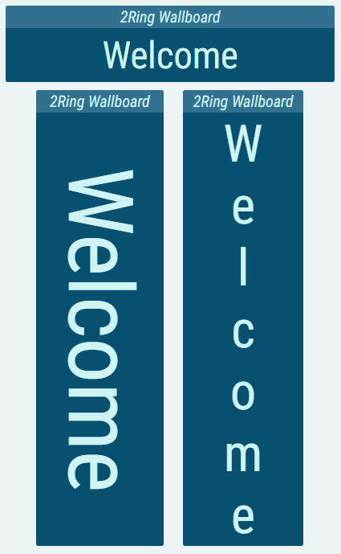
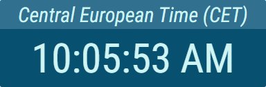
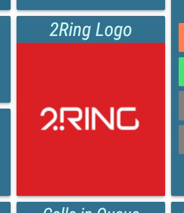
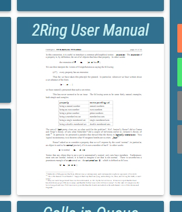
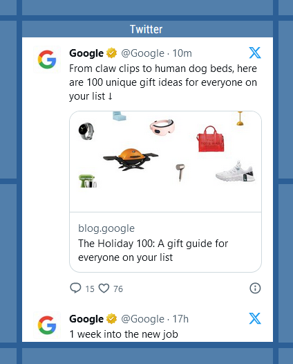
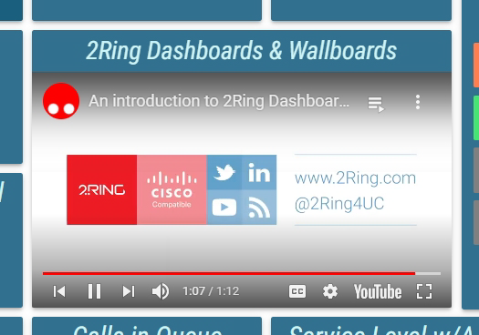
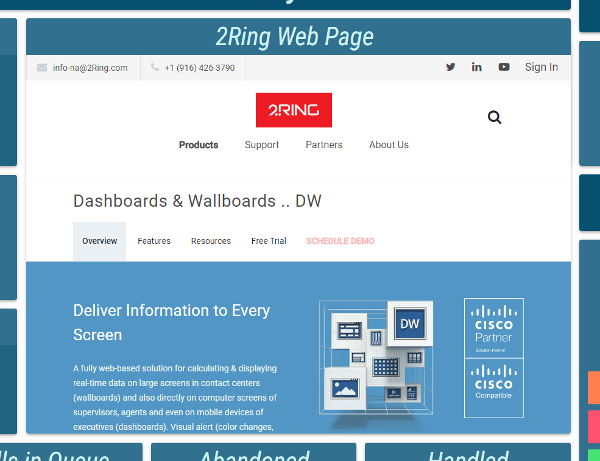
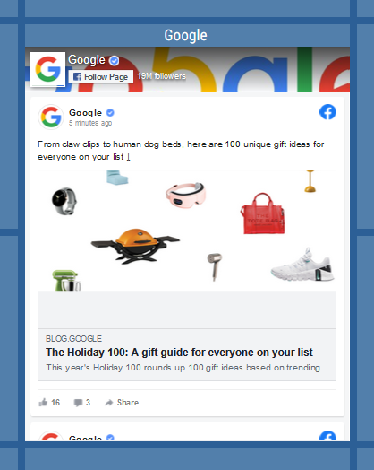

Simple Segments¶
Simple Segment types display either a static or external content such as document, image, text or similar.
Banner¶
A Banner displays a static text. Banner is usually used as a title for the entire Layout, or as a header of a group of other segments. Furthermore, important announcements or information can be sent to and displayed using the Banner segment. A single Banner can contain multiple lines of text (only when using regular banner text flow).
If used directly in a Layout segment the Banner itself is limited by width of the segment. However, when put inside a Ticker, the full text will scroll within the Ticker.
For more information about editing the Banner, see Banner chapter.
For more information about editing the Ticker, see Ticker chapter.
Figure 1: Banner
Figure 2: Banner - various orientations
Clock¶
A Clock displays current date, time or both. The type of information displayed can be configured using the datetime format.
By default a Clock uses the local time zone (time zone the user is located in). However, a specific time zone can be chosen instead.
For more information about editing this segment, see Clock chapter.
Figure 3: Clock
Image¶
A Image displays a picture or a gif file as a part of a Layout. Publicly available pictures can be shown by using their URL or pictures can be also loaded from the server, where the DW application is deployed.
Default images are stored in the distribution package in the Assets\Images folder in case, if any of them needs to be uploaded.
Image can be configured to periodically refresh its picture. This allows the use of dynamically generated images, or images, that change over time.
For more information about editing this segment, see Image chapter.
Figure 4: Layout with Image segment
Label¶
A Label displays a static text, usually used as a title for the entire Layout, or as a header of a group of other segments. A single Label can contain multiple lines of text. Unlike the Banner, no information or text can be sent to a Label.
If used directly in a Layout, the Label itself is limited by width of the segment. However, when put inside a Ticker, the full text will scroll within the Ticker.
For more information about editing the Label, see Label chapter.
For more information about editing the Ticker, see Ticker chapter.
Figure 5: Label
PDF Document¶
A PDF Document displays a document as a part of a Layout. Documents are loaded from the server, where the DW application is deployed.
Documents with multiple pages are supported. Pages are automatically paged through, in the configured interval. Documents can be periodically refreshed. This allows the use of dynamically generated documents, or documents, that change over time.
For more information about editing this segment, see PDF Document chapter.
Figure 6: Layout with Pdf Document segment
Shape¶
A Shape is a simple source, allowing user to create a rectagular, eliptical or triangular shapes with an option to change the color and add borders. A shape source can, for example, be used as a background for a certain part of a layout that should be visually separated from the rest.
Figure 7: Background created by the shape segment

For more information about editing this segment, see the Shape chapter.
Social Feed - X (Twitter)¶
Social Feed - X (Twitter) segment provides ability to display any X (Twitter) page directly in the DW segment.
It is not required to be logged in the X (Twitter) to display page content.
Figure 9: Social Feed - X (Twitter)
For more information about editing this segment, see the Social Feed - X (Twitter) chapter.
Video – YouTube¶
Videos and playlists, hosted on the YouTube website can be displayed as a part of a Layout. Typical use of this source is to display a company overview video, provide a live TV feed, such as a news channel or play music.
- The following options of the embedded player, used to display the YouTube video, can be configured:
Default volume.
Enable or disable the Closed Captions.
Enable or disable, whether the controls are available.
Enable or disable the Annotations.
The video is always automatically played. In case the autoplay function does not work properly, see the Media autoplay not working chapter.
For more information about editing this segment, see Video – YouTube chapter.
Figure 10: Layout with Video – YouTube segment
Web Page¶
Other websites can be displayed in the Layout. The displayed page is fully interactable and can be configured to refresh periodically, to always display the newest version of the website. A Web Page can be used to display sites like news sites, weather applications or local intranet sites.
Some websites don’t support embedding and cannot be used in the Web Page segment.
For more information about editing this segment, see Web Page chapter.
Figure 11: Layout with Web Page

Social Feed - Facebook¶
Social Feed - Facebook segment provides ability to display any Facebook page directly in the DW segment.
It is not required to be logged in the Facebook to display page content.
Figure 8: Social Feed - Facebook
For more information about editing this segment, see the Social Feed - Facebook chapter.